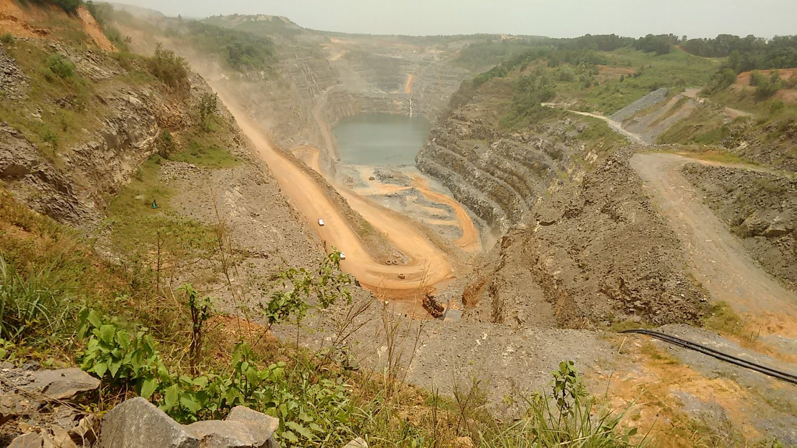

Gold mining industry
Ghana is Africa's largest gold producer and the sixth-largest in the world. About one third of the nation’s gold comes from artisanal and small-scale mines, locally called galamsey ("gather and sell"). Most of these mines operate illegally without a license, with simple machinery and limited investment. Therefore, they rely on a large workforce where child labor is common, despite both Ghanaian and international law prohibiting hazardous child labor.
Young boys and girls work up to 14 hours a day, both above and underground. In the tunnels and mine shafts, they risk death from explosions, rock falls, and tunnel collapse. They breathe air filled with dust and sometimes toxic gases. Above ground, children dig, crush, mill, and haul heavy loads of ore. They stand for hours in water, digging sand or silt from riverbeds and then carrying bags of mud on their heads or backs to sieving and washing sites. Finally, they work with mercury by amalgamating it with gold and then burning the amalgam to separate out the gold. Mercury is a highly toxic metal and can be absorbed through the skin or inhaled through mercury vapor. It attacks the central nervous system and can cause lifelong disability, including brain damage, and even death.
Like adults, children suffer the effects of poor ventilation and lighting, exhaustion, and overexertion. But children are particularly vulnerable to exposure to dust and chemicals because their young bodies are still developing. The impact of these dangerous conditions is devastating to their health, causing serious respiratory conditions (e.g. silicosis), constant headaches, hearing and vision problems, joint disorders, and long-term spine and brain damage.
While many of the children are fortunate to attend school, they often miss school due to chronic illness, exhaustion, or their work schedule prevents regular attendance. Many children work in order to raise money for school. For example, 17-year-old Grace carries heavy loads of mud ore to pay the $250 admission cost of secondary school. Although public primary and junior high schools are officially free in Ghana, they charge fees for books, school supplies, parent-teacher association (PTA) dues, and other items. Amma, 16, has worked in gold mining since she was 14 because her mother does not have enough money for school. Sometimes she earns $15 -18 in three weeks, together with her mother. A 12-year-old boy named Fynn said he worked to earn money for a school uniform. These children risk their health and lives in order to afford and attend school.
